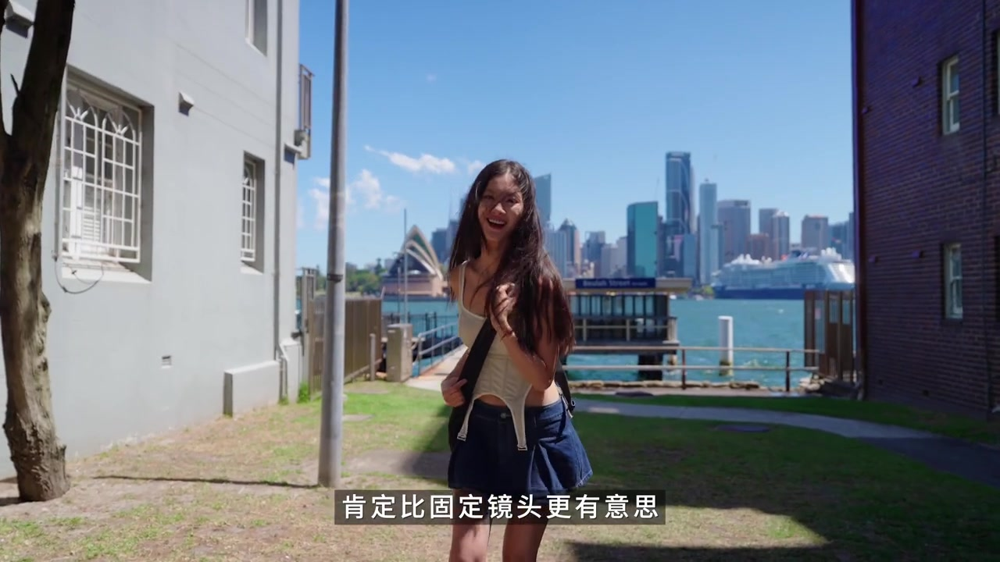
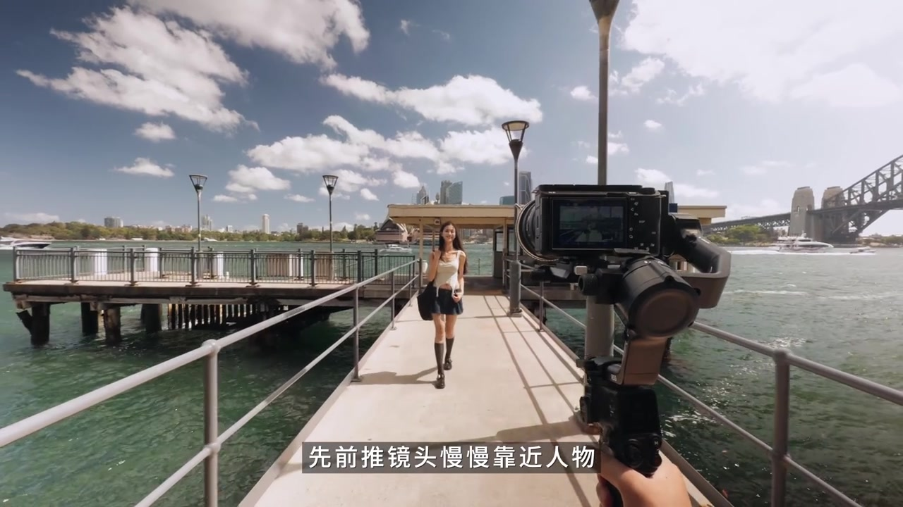
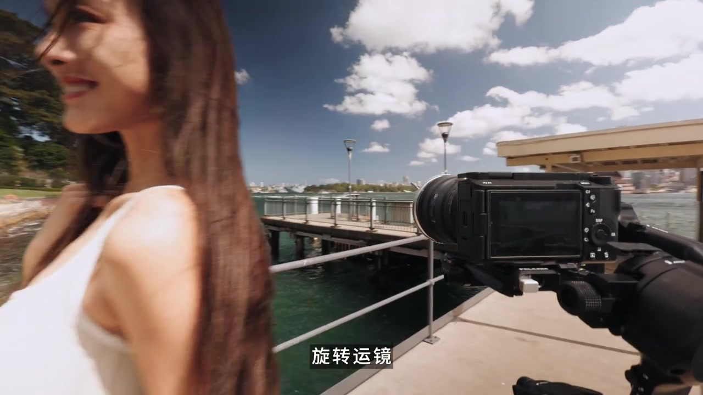
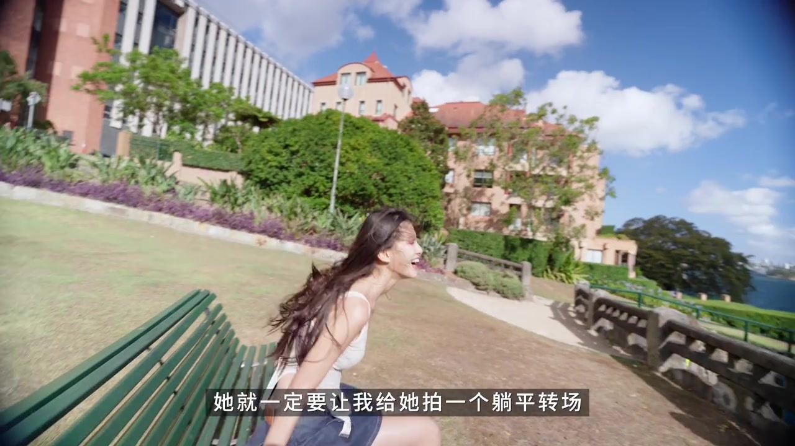
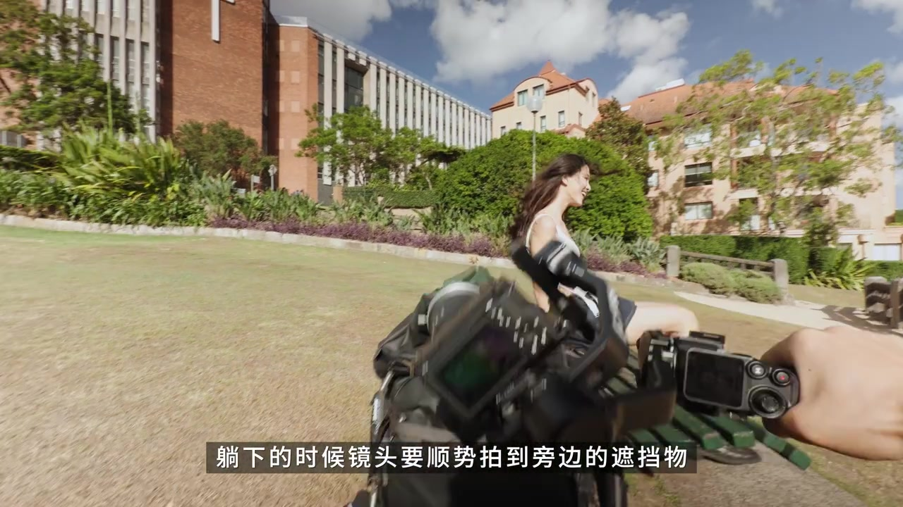
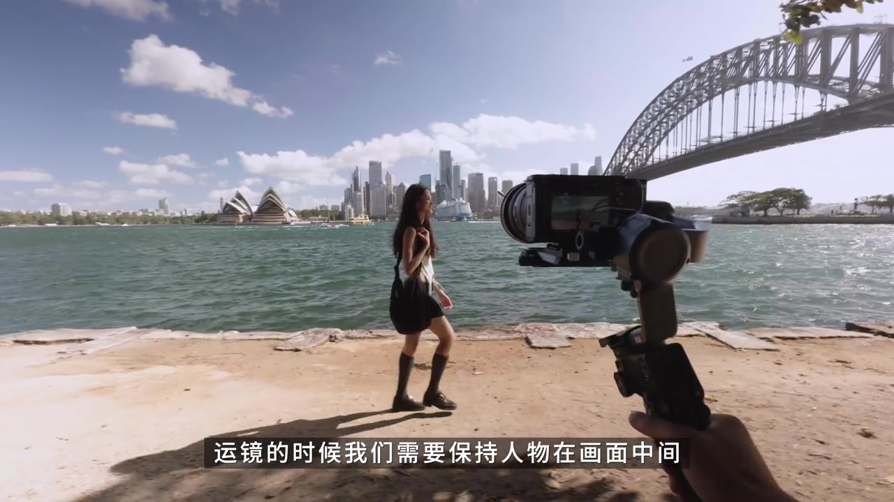
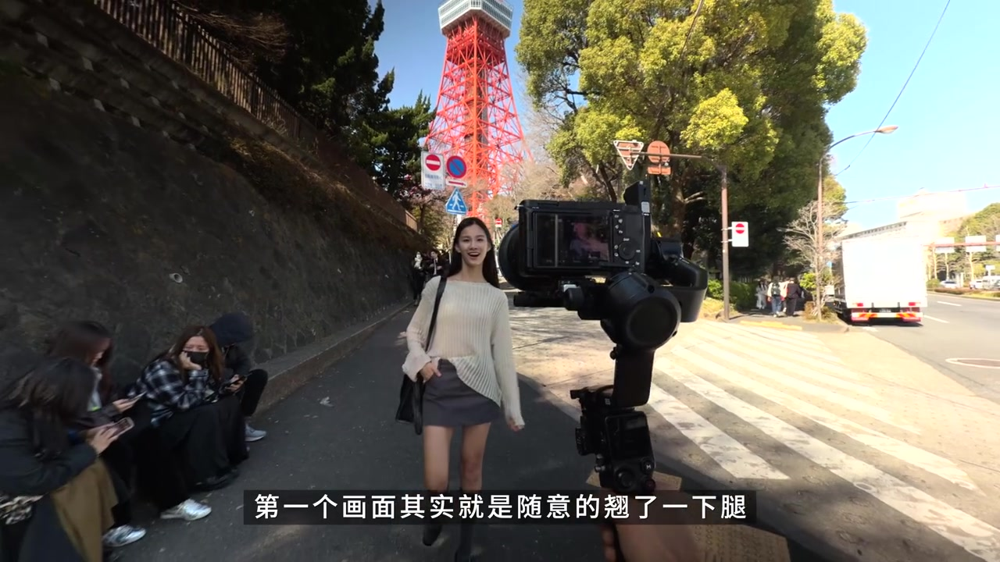

开场
先别急着拍固定镜头
视频一开头，作者站在悉尼港边的巷道里，身后是歌剧院与 Beulah Street 渡口。她抛出旅拍时最常见的念头：想在某个场景出片，脑子里第一个反应往往是「先拍一个固定镜头」。
紧接着她反问：如果镜头自己运动起来，是不是比固定镜更有意思？随后直接插入一段带转场的运镜示范，把观众从「拍什么」拽到「怎么接」。
笔记文案与画面字幕写作「盘点」；Whisper 此处听成「谈念」。下文叙述按视频意图理解，完整原始分段仍保留在页末转录。

第一种 · 00:18
人为制造一次「擦肩而过」
第一种套路被文案写成「人为制造出一起擦肩而过」。操作拆得很短：先前推镜头，慢慢靠近人物；快到肩膀时做旋转运镜；下一个画面从肩膀转过来，再把镜头向后拉。
画面里能看见稳定器前推、人物贴近，以及旋转瞬间肩膀掠过镜头——转场的「接头」就夹在这个肩膀黑场/遮挡里。


第二种 · 00:30
躺平转场：反差越大越惊艳
第二种来自一段轻松插曲：来澳洲之前，「她」就一定要拍一个躺平转场——躺完还得自己爬起来。作者笑着说这个转场「贼有意思」，关键是反差：前一镜随意、后一镜风景越美越好。
拍法上，她提醒示范时用了较专业的设备（画面与标签指向索尼机身加大疆 RS5 一类稳定器），但自己练手时「用身边最顺手的设备就好」。具体步骤：第一镜可以随意一点；人物躺下时镜头顺势拍到旁边遮挡物（她用摄影背包）；再从遮挡物起向相同方向继续运镜，接到风景画面。


第三种 · 00:59
走路转场：人物始终在画面中间
第三种被她称为最常被大家用到的走路转场：简单、随便拍一拍也能出片。运镜要点是保持人物在画面中间，可打开相机/手机三分线辅助构图；在不同场景各拍一段朋友走路，再剪接起来即可。
示范画面里，人物沿悉尼港岸线行走，背景同时出现歌剧院与海港大桥，稳定器跟拍让行走成为场景之间的「胶水」。

第四种 · 01:18
相似动作 / 定格转场
文案把第四种标为「定格转场」。口播示范是：拍完走路转场后顺便再拍一镜——第一画面随意翘一下腿，下一镜用同样构图做相似动作，动作相似性本身就成为转场点。
她补充：若想更松弛，不必追求动作完全贴合；只要画面之间有相似性，就可以做转场。示范场景切到东京塔前的街道，构图与姿势形成「跨城市」呼应。

设备分享 · 01:35
从 iPhone 到稳定器：旅拍背包里有什么
四种套路讲完，作者进入「最近的设备小分享」。因为是毕业后第一次回澳洲，这次带了不少器材。
画面字幕写明：最小的设备是 iPhone 17 Pro Max——深度使用后她觉得画质好，也是很合适的 vlog 设备；本片专门用它拍运镜的第三视角。拍视频主力是索尼机身（口播被 Whisper 记成 ZV-11，结合画面更接近 ZV-E10 一类轻便 vlog 相机）。选设备的条件是：又要专业，又要轻便。
稳定器部分，她带了两台偏轻便的方案，并强调智能追踪模块：吸到稳定器上就能追踪自己；升级后还可追踪物体，滑动屏幕即可触发。她还提到周边拨轮旋钮让调参更方便，以及电动跟焦类配件能「在跟焦环上直接操作稳定器」——并称这是别家稳定器少有的体验。对比下来，手感与丝滑度仍偏爱 RS5；收尾金句是：这类专业设备「你可以不用，但是我不能没有」。
这一趟旅拍带走什么
四个组合的共同点不是滤镜，而是「用身体或遮挡制造剪辑点」：肩膀、背包、走路节奏、相似动作。设备段是加分项；手机也能完成第三视角，关键仍是事先想好接头。